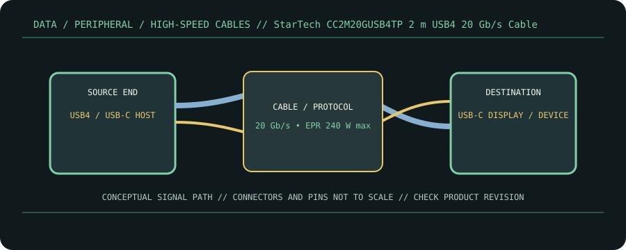

[ CABLE PRODUCT RECORD // STARTECH.COM CC2M20GUSB4TP USB4 CABLE ]
StarTech CC2M20GUSB4TP 2 m USB4 20 Gb/s Cable
USB-C male ↔ USB-C male, USB-IF-certified cable model. This entry documents the named product model, not a universal guarantee for all cables with the same connector.

CLASSIFICATION: Data, peripheral, and high-speed cables. Model-specific facts below are sourced; negotiated operation remains limited by the connected devices.
Interface and capability
| Product / protocol | StarTech.com CC2M20GUSB4TP USB4 cable. USB4 up to 20 Gb/s; USB Power Delivery 3.1 EPR; DisplayPort Alt Mode on compatible endpoints. |
|---|---|
| Connector type | Two USB-C male connectors; model has an E-marker, 2 m length and product-specific USB4 20 Gb/s marking. |
| Electrical / length limits | 2 m; up to 20 Gb/s data and up to 240 W (48 V/5 A) USB PD EPR according to StarTech. The 240 W level requires a compliant EPR source, sink and cable negotiation. |
| Revision-specific compatibility | Supports compatible USB-C USB4 devices and backward modes, but host/device capability determines negotiated data rate and display. The 20 Gb/s model is not the same as a 40 Gb/s cable simply because both are labeled USB4. |
Compatibility & handling
- For 240 W use, confirm EPR-capable charger and device and retain the exact EPR-rated cable; a 5 A claim must not be generalized to other USB-C cables.
- StarTech describes video capability for compatible systems; resolution and refresh depend on GPU, host lane allocation, monitor and DP mode.
- For Thunderbolt hosts, verify the product’s exact compatibility entry and negotiated rate rather than assuming USB4 20 Gb/s means Thunderbolt 4 at 40 Gb/s.
Sources & further reading
- StarTech — CC2M20GUSB4TP 2 m USB4 cableManufacturer model specification for 20 Gb/s, 2 m and EPR power rating.
- USB-IF — USB4 Specification v2.0USB4 protocol and capability framework.
- USB-IF — USB Type-C Cable and Connector SpecificationUSB-C cable identification, current and connector requirements.